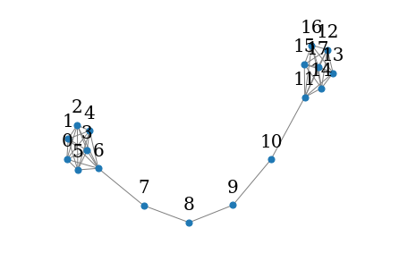
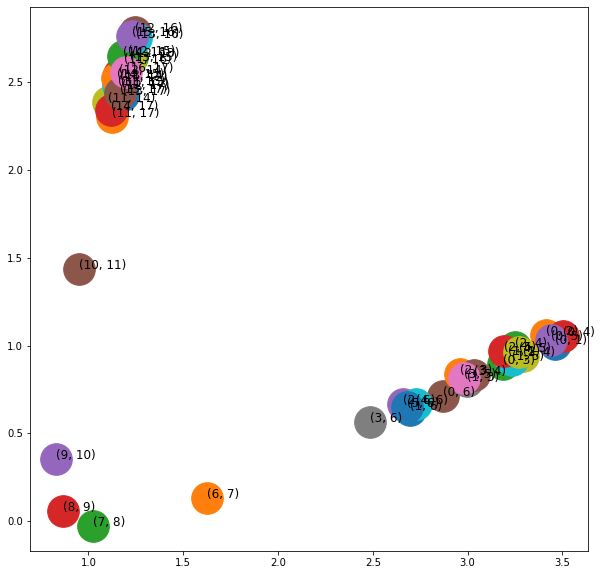
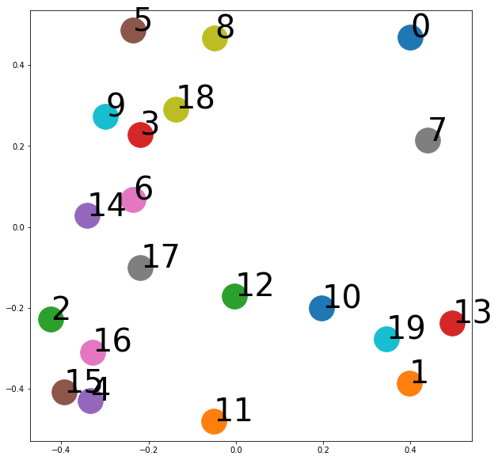

import matplotlib.pyplot as plt
def draw_graph(G, pos_nodes, node_names={}, node_size=50, plot_weight=False):
nx.draw(G, pos_nodes, with_labels=False, node_size=node_size, edge_color='gray', arrowsize=30)
pos_attrs = {}
for node, coords in pos_nodes.items():
pos_attrs[node] = (coords[0], coords[1] + 0.08)
nx.draw_networkx_labels(G, pos_attrs, font_family='serif', font_size=20)
if plot_weight:
pos_attrs = {}
for node, coords in pos_nodes.items():
pos_attrs[node] = (coords[0], coords[1] + 0.08)
nx.draw_networkx_labels(G, pos_attrs, font_family='serif', font_size=20)
edge_labels=dict([((a,b,),d["weight"]) for a,b,d in G.edges(data=True)])
nx.draw_networkx_edge_labels(G, pos_nodes, edge_labels=edge_labels)
plt.axis('off')
axis = plt.gca()
axis.set_xlim([1.2*x for x in axis.get_xlim()])
axis.set_ylim([1.2*y for y in axis.get_ylim()])ref
Node2Vec
그래프 노드 간의 유사성을 보존하며 그래프의 구조를 임베딩하는 임베딩 알고리즘
DeepWalk -> Node2Vec(랜덤 워크의 방향성 제어 가능)
노드 탐색 방향성 제어를 위한 2개 매개변수 사용
return parameter: 이전에 방문한 노드와 얼마나 멀리 떨어져있는지 거리in-out parameter: 이전 노드와 멀리 떨어진 노드의 샘플링하는 정도를 조절
Node2Vec 알고리즘 구현 방법
1 그래프 생성
2 Node2Vec 객체 생성
node2vec = Node2Vec(G, dimensions=, walk_length=, num_walks=, p=, q=, workers=)dimensions : 임베딩할 벡터의 차원 수
walk_length : 랜덤 워크에서 한 번에 이동할 노드 수
num_walks : 랜덤 워크를 몇 번 반복할 것인지
p, q : 노드 탐색을 위한 확률값을 조정하는 매개변수
3 랜덤 워크를 수행하여 노드 시퀀스 생성
4 생성된 노드 시퀀스(그래프 내의 노드들이 순서) 임베딩
랜덤 워크(Random Walk)
그래프 내의 노드를 방문하며 노드 간의 관계를 탐색하는 과정
시작 노드에서 출발하여 현재 노드와 연결된 노드들 중 하나를 무작위로 선택하여 이동
만약 선택된 노드가 이전에 방문한 노드이면 return parameter에 따라 이전 노드로 다시 돌아갈 확률이 높아짐
반면, 이전 노드와 멀리 떨어진 노드를 샘플링하는 경우에는 in-out parameter에 따라 더 멀리 떨어진 노드를 샘플링하는 비율이 조절
랜덤 워크 시퀀스는 각 노드의 방문 횟수, 이웃 노드의 구성 등 그래프의 구조적 특성을 반영
Node2Vec example
import networkx as nx
from node2vec import Node2Vec
G = nx.barbell_graph(m1=7, m2=4) # 바벨 그래프 생성
draw_graph(G, nx.spring_layout(G))
node2vec = Node2Vec(G, dimensions=2) # 그래프의 각 노드를 2차원 벡터로 생성
model = node2vec.fit(window=10) # 원본 그래프 노드에 임베딩 알고리즘 적용해 생성된 2차원 벡터
Generating walks (CPU: 1): 100%|██████████| 10/10 [00:00<00:00, 346.40it/s]
Edge2Vec
그래프의 엣지에 대한 저차원 벡터 표현 학습
목적은 그래프의 엣지의 구조적 및 의미적 특성을 포착해 링크 예측이나 또는 분류와 같은 하위 작업에 사용하는 저차원 벡터 표현 학습
Edge2Vec 알고리즘 구현 방법
1 그래프 데이터 로딩
2 모델 학습
3 엣지 임베딩: 학습된 Edge2Vec모델을 이용해 각 엣지를 임베딩 벡터로 변환하고 임베딩 벡터의 차원 수는 모델 하이퍼파라미터 값에 따른다.
4 분류 또는 유사도 측정
Edge2Vec example
from node2vec.edges import HadamardEmbedder # Node2Vec 모델을 사용하여 학습된 그래프 임베딩 모델에서 HadamardEmbedder를 이용하여 엣지 임베딩 벡터를 생성하고, 그것을 시각화하는 코드
edges_embs = HadamardEmbedder(keyed_vectors=model.wv) # model.wv : 학습된 노드 입베딩 벡터를 가지고있는 객체
fig, ax=plt.subplots(figsize=(10,10))
for x in G.edges():
v = edges_embs[(str(x[0]), str(x[1]))]
ax.scatter(v[0],v[1], s=1000)
ax.annotate(str(x), (v[0],v[1]), fontsize=12) # 엣지를 해당하는 점위에 텍스트로 나타냄, 즉 해당 점의 x,y좌표를 설정
- HadamardEmbedder: 두 노드의 임베딩 벡터를 element-wise 곱한 결과를 사용하여 엣지의 임베딩 벡터를 생성
Graph2Vec
그래프를 분할하여 분할된 부분 그래프들의 순서를 고려하여 벡터로 변환하는 과정 반복
분할된 부분 그래프의 순서가 달라도 동일한 벡터로 변환 가능
Graph2Vec 알고리즘 구현 방법
1 그래프 분할: 서로 겹치지 않게 입력 그래프를 여러 개의 부분 그래프로 분할
2 순서 부여: 분할된 부분 그래프에 순서를 부여
3 부분 그래프 임베딩
4 전체 그래프 임베딩
5 분류 또는 유사도 측정
Graph2Vec Example
pip install karateclubCollecting karateclub
Downloading karateclub-1.3.3.tar.gz (64 kB)
━━━━━━━━━━━━━━━━━━━━━━━━━━━━━━━━━━━━━━━━ 64.5/64.5 kB 5.2 MB/s eta 0:00:00
Preparing metadata (setup.py) ... done
Collecting numpy<1.23.0
Downloading numpy-1.22.4-cp38-cp38-manylinux_2_17_x86_64.manylinux2014_x86_64.whl (16.9 MB)
━━━━━━━━━━━━━━━━━━━━━━━━━━━━━━━━━━━━━━━━ 16.9/16.9 MB 81.5 MB/s eta 0:00:0000:0100:01
Collecting networkx<2.7
Downloading networkx-2.6.3-py3-none-any.whl (1.9 MB)
━━━━━━━━━━━━━━━━━━━━━━━━━━━━━━━━━━━━━━━━ 1.9/1.9 MB 88.6 MB/s eta 0:00:00
Collecting decorator==4.4.2
Downloading decorator-4.4.2-py2.py3-none-any.whl (9.2 kB)
Requirement already satisfied: tqdm in /home/coco/anaconda3/envs/py38/lib/python3.8/site-packages (from karateclub) (4.65.0)
Requirement already satisfied: python-louvain in /home/coco/anaconda3/envs/py38/lib/python3.8/site-packages (from karateclub) (0.16)
Requirement already satisfied: scikit-learn in /home/coco/anaconda3/envs/py38/lib/python3.8/site-packages (from karateclub) (1.2.2)
Requirement already satisfied: scipy in /home/coco/anaconda3/envs/py38/lib/python3.8/site-packages (from karateclub) (1.10.1)
Collecting pygsp
Downloading PyGSP-0.5.1-py2.py3-none-any.whl (1.8 MB)
━━━━━━━━━━━━━━━━━━━━━━━━━━━━━━━━━━━━━━━━ 1.8/1.8 MB 78.9 MB/s eta 0:00:00
Requirement already satisfied: gensim>=4.0.0 in /home/coco/anaconda3/envs/py38/lib/python3.8/site-packages (from karateclub) (4.3.1)
Collecting pandas<=1.3.5
Downloading pandas-1.3.5-cp38-cp38-manylinux_2_17_x86_64.manylinux2014_x86_64.whl (11.5 MB)
━━━━━━━━━━━━━━━━━━━━━━━━━━━━━━━━━━━━━━━━ 11.5/11.5 MB 94.0 MB/s eta 0:00:0000:0100:01
Requirement already satisfied: six in /home/coco/anaconda3/envs/py38/lib/python3.8/site-packages (from karateclub) (1.16.0)
Collecting python-Levenshtein
Downloading python_Levenshtein-0.20.9-py3-none-any.whl (9.4 kB)
Requirement already satisfied: smart-open>=1.8.1 in /home/coco/anaconda3/envs/py38/lib/python3.8/site-packages (from gensim>=4.0.0->karateclub) (6.3.0)
Requirement already satisfied: pytz>=2017.3 in /home/coco/anaconda3/envs/py38/lib/python3.8/site-packages (from pandas<=1.3.5->karateclub) (2022.7.1)
Requirement already satisfied: python-dateutil>=2.7.3 in /home/coco/anaconda3/envs/py38/lib/python3.8/site-packages (from pandas<=1.3.5->karateclub) (2.8.2)
Collecting Levenshtein==0.20.9
Downloading Levenshtein-0.20.9-cp38-cp38-manylinux_2_17_x86_64.manylinux2014_x86_64.whl (174 kB)
━━━━━━━━━━━━━━━━━━━━━━━━━━━━━━━━━━━━━━ 174.0/174.0 kB 36.6 MB/s eta 0:00:00
Collecting rapidfuzz<3.0.0,>=2.3.0
Downloading rapidfuzz-2.15.0-cp38-cp38-manylinux_2_17_x86_64.manylinux2014_x86_64.whl (2.2 MB)
━━━━━━━━━━━━━━━━━━━━━━━━━━━━━━━━━━━━━━━━ 2.2/2.2 MB 102.2 MB/s eta 0:00:00
Requirement already satisfied: threadpoolctl>=2.0.0 in /home/coco/anaconda3/envs/py38/lib/python3.8/site-packages (from scikit-learn->karateclub) (3.1.0)
Requirement already satisfied: joblib>=1.1.1 in /home/coco/anaconda3/envs/py38/lib/python3.8/site-packages (from scikit-learn->karateclub) (1.2.0)
Building wheels for collected packages: karateclub
Building wheel for karateclub (setup.py) ... done
Created wheel for karateclub: filename=karateclub-1.3.3-py3-none-any.whl size=101987 sha256=9b0452b9dfbfaa045ccbf70aeee54c5ac34fdb4bf2d2af2d6facab840d6d499d
Stored in directory: /home/coco/.cache/pip/wheels/2b/93/72/8e0b3ec687bea23bd34bbb723a82fcb6b074cb756a29441f0c
Successfully built karateclub
Installing collected packages: rapidfuzz, numpy, networkx, decorator, pandas, Levenshtein, python-Levenshtein, pygsp, karateclub
Attempting uninstall: numpy
Found existing installation: numpy 1.24.2
Uninstalling numpy-1.24.2:
Successfully uninstalled numpy-1.24.2
Attempting uninstall: networkx
Found existing installation: networkx 2.8.8
Uninstalling networkx-2.8.8:
Successfully uninstalled networkx-2.8.8
Attempting uninstall: decorator
Found existing installation: decorator 5.1.1
Uninstalling decorator-5.1.1:
Successfully uninstalled decorator-5.1.1
Attempting uninstall: pandas
Found existing installation: pandas 1.5.3
Uninstalling pandas-1.5.3:
Successfully uninstalled pandas-1.5.3
Successfully installed Levenshtein-0.20.9 decorator-4.4.2 karateclub-1.3.3 networkx-2.6.3 numpy-1.23.5 pandas-1.3.5 pygsp-0.5.1 python-Levenshtein-0.20.9 rapidfuzz-2.15.0
Note: you may need to restart the kernel to use updated packages.import random
import matplotlib.pyplot as plt
from karateclub import Graph2Vec
n_graphs = 20
def generate_radom():
n = random.randint(6, 20) # 노드 갯수
k = random.randint(5, n) # k-최근접 이웃 개수
p = random.uniform(0, 1) # 연결 확률 파라미터
return nx.watts_strogatz_graph(n,k,p), [n,k,p] # 함수를 사용하여 20개의 무작위 그래프 생성
Gs = [generate_radom() for x in range(n_graphs)]
model = Graph2Vec(dimensions=2, wl_iterations=10) # 임베딩 벡터 차원수: 2차원
model.fit([x[0] for x in Gs])
embeddings = model.get_embedding()
fig, ax = plt.subplots(figsize=(10,10))
for i,vec in enumerate(embeddings):
ax.scatter(vec[0],vec[1], s=1000)
ax.annotate(str(i), (vec[0],vec[1]), fontsize=40)
임베딩 알고리즘의 분류
얕은 임베딩
학습된 입력 데이터에 대한 임베딩 값만 학습하고 반환
Node2Vec, Edge2Vec, Graph2Vec
학습한 데이터의 벡터 표현만 반환
보이지 않는 데이터에 대한 임베딩 벡터는 못얻는다.
지도학습/비지도학습 각각 정의 가능
model.fit(graphs_list) #graphs_list 학습
embedding=model.get_embedding()[i]그래프 자동 인코딩
보이지 않는 인스턴스에 대한 임베딩 벡터도 생성
비지도 학습에 적합
model.fit(graphs_list) #graphs_list 학습
embedding=model.get_embedding(G) #보이지 않는 새로운 그래프 G의 임베딩 벡터 생성근방 집계
그래프 수준에서 임베딩 추출
노드는 일부 소석승 기반으로 라벨 지정
일반 사상 함수 \(f(G)\)를 학습 할 수 있고 보이지 않는 인스턴스에 대한 임베딩 벡터도 생성 가능
그래프 정규화
그래프를 입력으로 받지 않는다.
프로세스를 정규화하고자 상호작용을 나타내는 특정집합 학습
준지도학습/지도 학습에 사용